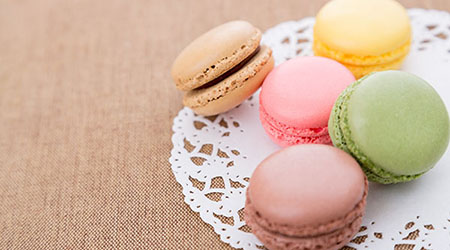
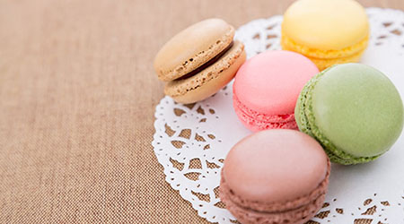

今月のモンブラン・手芸風スイーツ特集
ピックアップスイーツ
今月の動画で紹介したモンブランです。
今月採れた最高の栗を使用して作りました。

沖縄産の砂糖を使用したマカロンです。

2025/08/01公開その他の人気スイーツ
季節を問わず人気の定番のショートケーキをご紹介します。
素材にこだわった多種のフルーツを使用したスイーツの専門誌です。
今月の動画で紹介したモンブランです。
今月採れた最高の栗を使用して作りました。
沖縄産の砂糖を使用したマカロンです。

2025/08/01公開季節を問わず人気の定番のショートケーキをご紹介します。